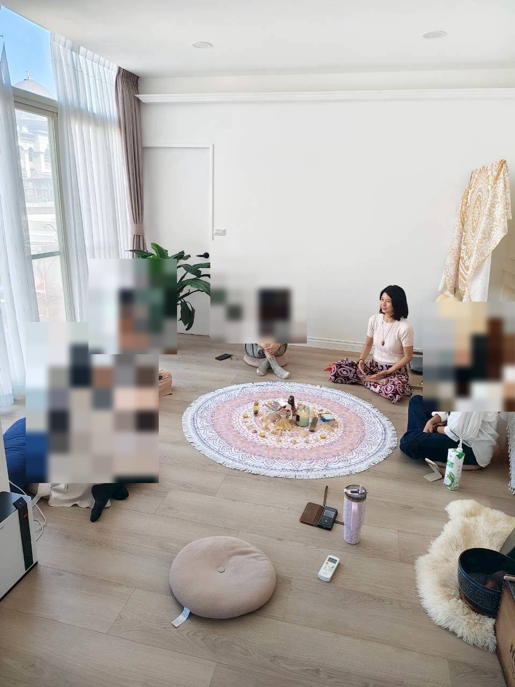
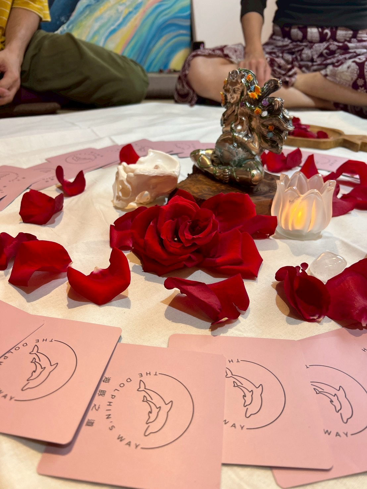
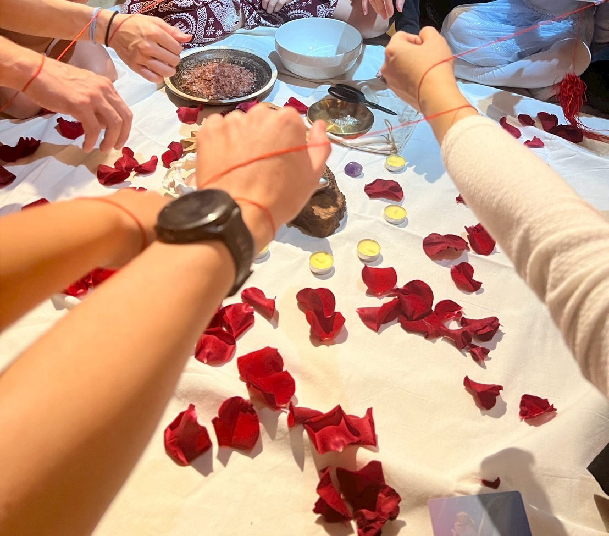
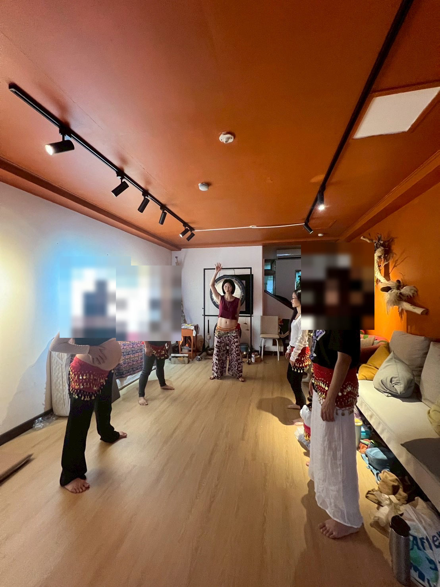

生產，從來不只是一個生理行為，
它是一個人、一個家庭的「生命門檻」。
當一個女性跨越這道門檻，
她經歷的不僅是身體的劇變，更是靈魂的重塑。
無論是漫長的備孕、體制內的溫柔生產、迫不及待的光速產、充滿變數的剖腹產、與家人共同參與的居家生產，乃至產後深淵似的憂鬱——每一種路徑，都是一個獨一無二的生命腳本。我們相信，這些故事不該只藏在產房與家庭的私密回憶裡，它們值得被述說、被聆聽、被尊崇。
在每一分、每一秒，世界上都有一組產家正在迎接新生命。這是一種跨越時空、集體而原始的生命律動。妳並不是孤島——妳正處於這道巨大的生命長河中，與千千萬萬的生命共振。
「圈」象徵一種平等、非階層的支持系統。我們不提供標準答案，不評判選擇的對錯，只創造一個能容納脆弱、也見證力量的場域，讓妳在孕產育兒的顛簸路上，知道有人並肩同行。
每一個成為父母的故事都是神聖的。尊重每一種生產方式與養育選擇，剔除評判與比較。
讓每位女性感受到對自己身體與孕育過程的掌控權，敢於尋找最適合自己的溫柔路徑。
述說是一種療癒，聆聽是一種轉化。營造安全溫暖的氛圍，讓身心靈得到安放。
「養一個孩子，需要全村的力量。」建立長期的女性與家庭支持網絡，不再孤獨。
順著生命成長的自然節奏，陪伴女性走過每一個階段。
備孕的期盼。在落空與等待裡，溫柔地照顧自己。
懷孕與生產的蛻變。回到身體，回到自己。
育兒的日常與創造。在親子關係裡長出美感。
回歸大地，回歸內在。在「母親」的標籤之外，我是誰？
吸氣、蓄氣、呼氣——有品質的暫停，才能迎來下一個生生不息的循環。
每場邀請一位產家，針對特定主題進行約 90 分鐘的線上深度分享。降低門檻，讓忙碌與遠方的妳，在家中舒適的角落吸納他人的生命能量。
約 3 小時的線下活動。上半場 2–3 位產家的故事分享，下半場由外聘講師帶領主題工作坊。讓妳暫時「向家庭告假」，專注於自我的充電與修復。
不舉辦公開活動。把時間留給參與者消化所得，也讓策展團隊回歸生活、整合資源。這是生命成長中不可或缺的「空白」。
女人圍坐成圈，彼此聆聽、彼此見證——這是我們一直在做、也想邀妳一起的事。




＊ 為保護參與者隱私，照片中部分臉孔已做模糊處理。
線上場為平日晚上、實體場為週末；公益女人圈於每月新月舉行。
| 日期 | 形式 | 講師 / 主題 |
|---|---|---|
| 7 / 14 | 公益女人圈 | 新月聚會（宥妤、欣妙） |
| 8/6 19:30–21:00 | 線上孕育圈 | 小沐 · 高齡孕育 ──「要不要生小孩」 |
| 8 / 13 | 公益女人圈 | 新月聚會 |
| 8 / 22–23 | 實體孕育圈 | Maggie · 媽媽寶寶舞動（主題待定） |
| 9 / 11 | 公益女人圈 | 新月聚會 |
| 9 月 | 線上孕育圈 | 朵朵 · 人類圖（主題待定） |
| 10 / 8 | 公益女人圈 | 新月聚會 |
| 10 月 | 實體孕育圈 | 為文 · 副食品 |
| 11 / 9 | 公益女人圈 | 新月聚會 |
| 11/18 19:30–21:00 | 線上孕育圈 | Lidia · 財務建築師 |
| 12 / 9 | 公益女人圈 | 新月聚會 |
| 12 月 | 實體孕育圈 | Chenti |
＊ 部分場次日期與主題持續調整中；9–12 月亦開放講者提案。確切時間以報名通知為準。
橫跨孕育、親子、賦能與身心靈的溫柔力量。
高齡孕育 · 從自身經驗談「要不要生小孩」
媽媽寶寶舞動 · 產前憂鬱 · 心理諮商
護理師 · 人類圖 · 身心調頻
財務建築師 · 媽媽的安心理財
正向書寫 · 透過文字療癒與整理
副食品 · 寶寶照護的日常實作
我們把自己定位為「策展人」與「場域守護者」，而非唯一的專家。如果妳在孕育、親子、賦能或身心靈的路上耕耘，有故事想說、有專業想分享——這個舞台，為妳而留。
輕鬆不耗能、不用很拚。我們一起織一張溫柔的網。
我要報名成為講師
三個女人，三位媽媽，三個陪產員，
三個單純希望更多女人，活出自己內在的光的引路人。